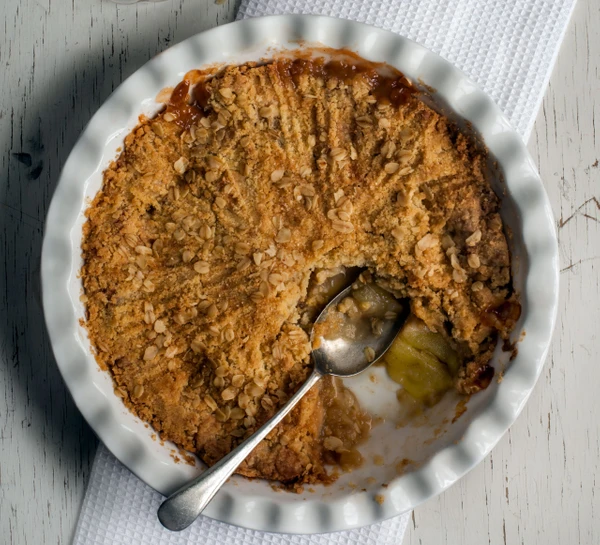

Apple Crumble

Description
You can't beat a traditional apple filling topped with crispy, buttery crumble - classic comfort food at its best.
In this household, there often emerges a call for something sweet. A specific kind of hunger and yearning which can only be appeased by the great crumble. This recipe is actually quite easy to make so don't be scared to give it a try.
Ingredients
- 575g apples
- 130g sugar
- 175g plain flour
- 110g cold butter
- 1 tbsp oats
- 1 tbsp cinnamon
Steps
- Heat the oven to 190C/170 fan
- Toss the peeled, cored, sliced aples with 2 tbsp sugar as well as the cinnamon and put in a 23cm round baking dish at least 5 cm deep. Flatten with your hand to prevent too much crumble falling through.
- Put flour and 110g sugar in a bowl with a pinch of salt.
- Add 110g butter and rub it in with your fingertips until mixture looks like moist breadcrumbs or until no big bits come to the surface when you shake the bowl.
- Pour crumble mix over the apples and use fork to even out.
- Gently pres the surface with the back of the fork so the crumble holds together and goes crisp.
- Sprinkle 1 tbsp oats and 1 tbsp sugar over evenly.
- Set on a baking tray and put in the oven for 35-40 minutes, until the top is golden and the apples feel soft when you insert a small, sharp knife. Leave to cool for 10 minutes before serving.